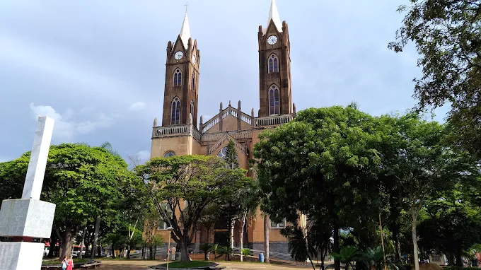
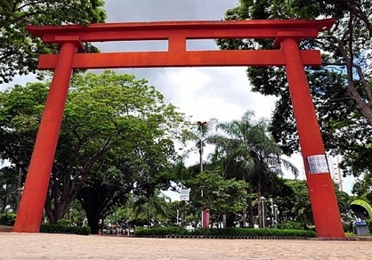

A História de Votuporanga Fundação e o Ciclo do Café: Votuporanga foi fundada no dia 8 de agosto de 1937. O surgimento e a história da cidade estão diretamente ligados ao final do ciclo econômico do café no estado de São Paulo.
O Loteamento: Essa empresa exportadora alemã decidiu constituir a Empresa Paulista Para Retalhar Terras com o intuito de lotear as áreas adquiridas. O empreendimento foi representado por Carlos Helwig e pelo engenheiro Guilherme Von Trumbach, que, juntamente com Otto Rittl, vieram para a região e separaram uma área para a criação de uma futura vila.
Fonte: https://pt.wikipedia.org/wiki/VotuporangaCuriosidades Interessantes
A Origem do Nome: O nome "Votuporanga" tem origem na língua Tupi-Guarani, onde "Votu" significa ar ou brisa, e "Poranga" significa belo, bom ou bonito. A junção resulta nos belos significados de "Bons Ventos", "Bons Ares" ou "Brisas Suaves". A sugestão do nome foi feita por Sebastião Almeida Oliveira e aceita logo de imediato porque refletia perfeitamente a topografia local.
Pontos Turísticos
Praça São Bento
A Praça São Bento, também referida historicamente como jardim da Vila Marin, é um espaço muito especial e um verdadeiro cartão postal de Votuporanga.
Monumento Tori: O grande destaque da praça é o Monumento Tori. O local foi escolhido pela colônia japonesa do município para receber essa bela estrutura, que foi construída pela Prefeitura.

Concha Acústica
A Concha Acústica é o coração cultural da região central e carrega uma rica memória afetiva para os cidadãos votuporanguenses.
O local continua sendo um pólo extremamente ativo para a realização de eventos turísticos e culturais. Um grande exemplo é o evento VotuGospel, que fortalece o turismo religioso e movimenta a Economia Criativa do município reunindo atrações musicais e o público diretamente na Concha Acústica.